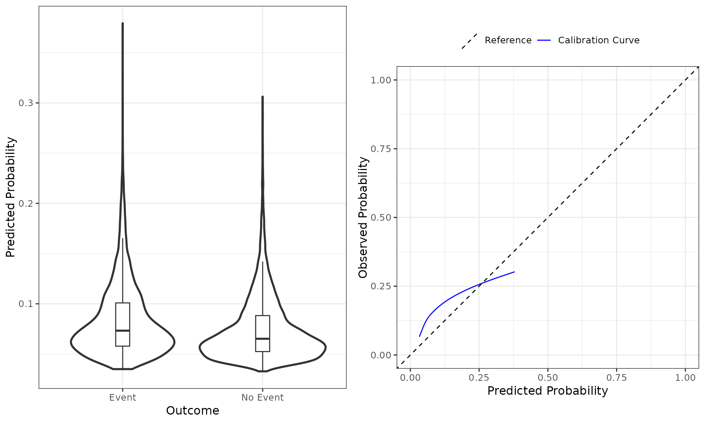
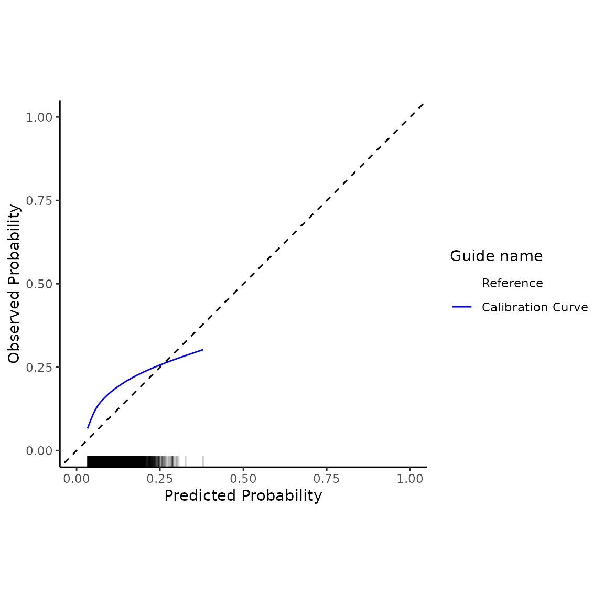

Introduction to the predRupdate package
Glen P. Martin, PhD; David Jenkins, PhD; Matthew Sperrin, PhD
Source:vignettes/predRupdate.Rmd
predRupdate.RmdPreamble
The predRupdate package includes a set of functions
to aid in the validation of a clinical prediction model (CPM) on a given
dataset, and to apply various model updating and aggregation methods.
This vignette aims to overview, through examples, some common workflows
of using the predRupdate package. For a technical
vignette describing the methods underpinning the package, please see
vignette("predRupdate_technical").
The package is focused on the situation where there is an existing CPM (or multiple CPMs) that has been developed (e.g., a model published in the literature), and one wishes to apply this model to a new dataset. We foresee at least three use-cases: (1) where one wishes to validate the existing CPM on the new data to estimate the model’s predictive performance, i.e., external validation; (2) where one wishes to apply model updating methods to the existing CPM to ‘tailor’ it to the new dataset; and (3) where there are multiple existing CPMs, and one wishes to apply model aggregation (meta-modelling) methods to pool these models into a single model for the new dataset. We therefore give three examples below for each of these use cases.
Data
The data, called SYNPM, used throughout this vignette are available within the predRupdate package. See “?SYNPM” for details of these data. In short, the data and models included in SYNPM are synthetic, but for the purposes of this vignette, we imagine that one is interested in predicting someone’s risk of mortality after surgery. Data are available on 20000 people, which records each individuals age, gender, smoking status, diabetes status, and Creatinine value at the time of surgery. The data includes the outcomes of “ETime” representing the time (months) between surgery and either death or end-of-follow-up (5 months), whichever occurred first. The variable “Status” indicates if the patient died (1) or was right-censored (0), and Y denotes a binary variable indicating if the patient died within 1 month.
Example 1: validating an existing prediction model on new data
In this first example, we take a situation where a CPM has previously been developed (in another dataset) to predict the risk of mortality within 1 month of surgery, and we wish to validate this model in our dataset to test the predictive performance (e.g., an external validation study).
The existing model was a logistic regression model, with the following predictor variables and coefficients (log-odds ratios):
| Coefficient | |
|---|---|
| Intercept | -3.995 |
| Age | 0.012 |
| SexM | 0.267 |
| Smoking_Status | 0.751 |
| Diabetes | 0.523 |
| Creatinine | 0.578 |
The first step in using predRupdate to validate this
model is to input the model information. We start by creating a
data.frame of the model coefficients, with the columns being the
predictor variable names. This information is then passed into the
pred_input_info() function to input the information about
the existing model. See pred_input_info() for details.
# create a data.frame of the model coefficients, with columns being variables
coefs_table <- data.frame("Intercept" = -3.995, #the intercept needs to be named exactly as given here
"Age" = 0.012,
"SexM" = 0.267,
"Smoking_Status" = 0.751,
"Diabetes" = 0.523,
"Creatinine" = 0.578)
#pass this into pred_input_info()
Existing_Logistic_Model <- pred_input_info(model_type = "logistic",
model_info = coefs_table)
summary(Existing_Logistic_Model)
#> Information about 1 existing model(s) of type 'logistic'
#>
#> Model Coefficients
#> =================================
#> Intercept Age SexM Smoking_Status Diabetes Creatinine
#> 1 -3.995 0.012 0.267 0.751 0.523 0.578
#>
#> Model Functional Form
#> =================================
#> Age + SexM + Smoking_Status + Diabetes + CreatinineNext we wish to apply this model to our dataset to calculate the
predicted risks for each individual, and then compare these predictions
with the observed outcomes to calculate predictive performance. This can
all be achieved with the pred_validate() function, as
follows:
validation_results <- pred_validate(x = Existing_Logistic_Model,
new_data = SYNPM$ValidationData,
binary_outcome = "Y")
summary(validation_results) #use summary() to obtain a tidy output summary of the model performance
#> Calibration Measures
#> ---------------------------------
#> Estimate Lower 95% Confidence Interval
#> Observed:Expected Ratio 1.8583 1.7959
#> Calibration Intercept 0.7076 0.6673
#> Calibration Slope 0.6496 0.5588
#> Upper 95% Confidence Interval
#> Observed:Expected Ratio 1.9228
#> Calibration Intercept 0.7479
#> Calibration Slope 0.7403
#>
#> Also examine the calibration plot, if produced.
#>
#> Discrimination Measures
#> ---------------------------------
#> Estimate Lower 95% Confidence Interval Upper 95% Confidence Interval
#> AUC 0.5816 0.5703 0.5928
#>
#>
#> Overall Performance Measures
#> ---------------------------------
#> Cox-Snell R-squared: -0.0446
#> Nagelkerke R-squared: -0.0801
#> Brier Score (CI): 0.1246 (0.1216, 0.1276)
#>
#> Also examine the distribution plot of predicted risks.This produces an output of the various metrics of model calibration (e.g., calibration intercept and slope), discrimination (e.g., area under the ROC curve) and overall performance (e.g., R-squared). We can see that this model has poor calibration (calibration intercept and slope significantly different from 0 and 1, respectively), and poor discrimination. We can also obtain the flexible calibration plot, as
plot(validation_results)
The left-panel shows a box-plot and violin-plot of the probability distributions, stratified by outcome, and the right-panel shows the flexible calibration plot. The package returns these plots as ggplot2 objects, so further modification of the plots can be made using ggplot2 statements. For example, one can change the theme of the plot as:
validation_results$flex_calibrationplot +
ggplot2::theme_classic() +
ggplot2::xlim(c(0,0.5)) + ggplot2:::ylim(c(0,0.5))
#> Scale for x is already present.
#> Adding another scale for x, which will replace the existing scale.
#> Scale for y is already present.
#> Adding another scale for y, which will replace the existing scale.
One may wish to update this model to the new dataset - see Example 2 below.
By default, 95% CIs are calculated for each performance metric. This can be changed by specifying level, as follows:
validation_results <- pred_validate(x = Existing_Logistic_Model,
new_data = SYNPM$ValidationData,
binary_outcome = "Y",
level = 0.90)
summary(validation_results) #use summary() to obtain a tidy output summary of the model performance
#> Calibration Measures
#> ---------------------------------
#> Estimate Lower 90% Confidence Interval
#> Observed:Expected Ratio 1.8583 1.8058
#> Calibration Intercept 0.7076 0.6738
#> Calibration Slope 0.6496 0.5734
#> Upper 90% Confidence Interval
#> Observed:Expected Ratio 1.9123
#> Calibration Intercept 0.7414
#> Calibration Slope 0.7257
#>
#> Also examine the calibration plot, if produced.
#>
#> Discrimination Measures
#> ---------------------------------
#> Estimate Lower 90% Confidence Interval Upper 90% Confidence Interval
#> AUC 0.5816 0.5722 0.591
#>
#>
#> Overall Performance Measures
#> ---------------------------------
#> Cox-Snell R-squared: -0.0446
#> Nagelkerke R-squared: -0.0801
#> Brier Score (CI): 0.1246 (0.1221, 0.1272)
#>
#> Also examine the distribution plot of predicted risks.Survival analysis model
The above example considered the validation of an existing CPM that was based on logistic regression. predRupdate also contains functionality to validate CPMs that are based on time-to-event (survival) models (e.g. a Cox proportional hazards model). In such a case, the baseline cumulative hazard of the model should also be specified, along with the regression coefficients.
In many cases, the baseline cumulative hazard of an existing CPM will not be reported in “full”, but rather estimates of the baseline cumulative hazard will be given at set follow-up times. To use predRupdate, users should specify the baseline cumulative hazard at the times at which one wishes to make predictions (or validate/update the model).
For example, suppose an existing CPM was developed using Cox proportional hazards to predict time-to-death after surgery, with the following predictor parameters (log hazard ratios):
| Coefficient | |
|---|---|
| Age | 0.007 |
| SexM | 0.225 |
| Smoking_Status | 0.685 |
| Diabetes | 0.425 |
| Creatinine | 0.587 |
and with the following baseline cumulative hazard reported at discrete times of months 1-5 post surgery:
| time | hazard |
|---|---|
| 1 | 0.0230191 |
| 2 | 0.0475351 |
| 3 | 0.0720775 |
| 4 | 0.0969976 |
| 5 | 0.1209202 |
We can then use the pred_validate() function to validate
this model at 1, 2, 3, 4 or 5 months follow-up in the new dataset. To
achieve this, one follows a similar syntax to above for the logistic
model. The main difference is that one needs to specify a time during
follow-up that we’d like to validate the model against - this time must
also be available in the baseline cumulative hazard provided.
# create a data.frame of the model coefficients, with columns being variables
coefs_table <- data.frame("Age" = 0.007,
"SexM" = 0.225,
"Smoking_Status" = 0.685,
"Diabetes" = 0.425,
"Creatinine" = 0.587)
#pass this into pred_input_info()
Existing_TTE_Model <- pred_input_info(model_type = "survival",
model_info = coefs_table,
cum_hazard = BH_table) #where BH_table is the baseline hazard above
#now validate against the time-to-event outcomes in the new dataset:
validation_results <- pred_validate(x = Existing_TTE_Model,
new_data = SYNPM$ValidationData,
survival_time = "ETime",
event_indicator = "Status",
time_horizon = 5)
summary(validation_results)
#> Calibration Measures
#> ---------------------------------
#> Estimate Lower 95% Confidence Interval
#> Observed:Expected Ratio 1.2211 1.2002
#> Calibration Slope 0.7129 0.6580
#> Upper 95% Confidence Interval
#> Observed:Expected Ratio 1.2423
#> Calibration Slope 0.7679
#>
#> Also examine the calibration plot, if produced.
#>
#> Discrimination Measures
#> ---------------------------------
#> Estimate Lower 95% Confidence Interval Upper 95% Confidence Interval
#> Harrell C 0.5789 0.5726 0.5852
#>
#> Also examine the distribution plot of predicted risks.Here, we see that the existing model under-predicts the mean risk at 5-months (observed:Expected Ratio greater than 1), and there is evidence of over-fitting. The model also has poor discrimination (Harrell C). We can also see this from the plot of the distribution of predicted risks, and the calibration plot, as follows:
plot(validation_results)
Specifying the baseline cumulative hazard
When validating an existing time-to-event model, the baseline cumulative hazard of the existing CPM should be reported (e.g., from the original model publication). In some cases, this might be reported at discrete follow-up times (like in the above example). Alternatively, the entire baseline cumulative hazard curve may be presented as a plot, or indeed a parametric form of the baseline cumulative hazard may be provided. In those situations, one should extract (from the plot) or calculate (from the parametric form) the baseline cumulative hazard at multiple follow-up times of interest (i.e., the follow-up times at which one wishes to validate the model against).
However, in some cases, the baseline cumulative hazard of the existing time-to-event CPM may not be reported. In such a situation, one can still use predRupdate to validate such a model. However, only a limited number of metrics will be produced (i.e., only those metrics that require the linear predictor, not absolute risk predictions at a given follow-up time). Specifically, the observed:expected ratio and the calibration plot will not be produced if the baseline cumulative hazard is not provided.
A note on basehaz() in R
If one has fit a Cox Proportional Hazards model in R (using coxph() from the survival package), and wishes to use predRupdate to internally validate this model, then the cumulative baseline hazard of the model must be estimated, and this can be done using the basehaz() function of the survival package. In this situation, care must be taken with regards to centering the data. By default, coxph() internally scales and centers the data that the model is being fit on (see ?survival::coxph() for details). As such, users should either pass newdata to basehaz() with values of each model covariate set to give the baseline cumulative hazard (e.g., 0 for continuous covariates or reference category for categorical/factor covariates), or make use of the ‘centrered=FALSE’ option in basehaz(). Not doing this means that basehaz() will return the cumulative baseline hazard for centered and scaled covariate values (see ?survival::basehaz() for details; specifically, the ‘centered=TRUE’ argument of that function). If one then passes the resulting baseline hazard into predRupdate package functions, care must be taken to also scale and centre the new_data that are passed to predRupdate functions. Our package functions make no attempt at checking this consistency, and users are advised to ensure that the baseline cumulative hazard is consistent with the format of the new data that is being provided to validate the model.
The below example code illustrates these points:
df <- SYNPM$ValidationData
cox_mod <- survival::coxph(survival::Surv(ETime, Status) ~ Age + Creatinine,
data = df)
coefs_table <- data.frame("Age" = coef(cox_mod)["Age"],
"Creatinine" = coef(cox_mod)["Creatinine"])
#example of using basehaz() for uncentered/values:
base_haz_zero <- survival::basehaz(cox_mod,
newdata = data.frame("Age" = 0,
"Creatinine" = 0))
#or use centered=FALSE in survival::basehaz()
#base_haz_zero <- survival::basehaz(cox_mod, centered = FALSE)
Existing_TTE_Model <- pred_input_info(model_type = "survival",
model_info = coefs_table,
cum_hazard = data.frame("time" = base_haz_zero$time,
"hazard" = base_haz_zero$hazard))
pred_validate(x = Existing_TTE_Model,
new_data = data.frame("Age" = df$Age,
"Creatinine" = df$Creatinine,
"ETime" = df$ETime,
"Status" = df$Status),
survival_time = "ETime",
event_indicator = "Status",
time_horizon = 5)
#Alternatively, the below code shows how to handle the scaled/centred baseline
# hazard, such that we need to also scale/centre the new_data:
base_haz_centred <- survival::basehaz(cox_mod)
Existing_TTE_Model <- pred_input_info(model_type = "survival",
model_info = coefs_table,
cum_hazard = data.frame("time" = base_haz_centred$time,
"hazard" = base_haz_centred$hazard))
pred_validate(x = Existing_TTE_Model,
new_data = data.frame("Age" = df$Age - mean(df$Age),
"Creatinine" = df$Creatinine - mean(df$Creatinine),
"ETime" = df$ETime,
"Status" = df$Status),
survival_time = "ETime",
event_indicator = "Status",
time_horizon = 5)
#failing to mean-center new_data passed into pred_validate() would give erroneous results.Example 2: model updating on new data
In the validation of an existing logistic regression model in Example
1 above, we found that the existing model was miscalibrated in the new
data. One strategy to handle this is to apply a range of model updating
methods; see vignette("predRupdate_technical") for a
technical discussion of these methods.
To illustrate how to achieve this with predRupdate,
we here choose to apply model re-calibration to the existing logistic
regression model shown in Example 1 above. Within
predRupdate, we use pred_update():
# create a data.frame of the model coefficients, with columns being variables
coefs_table <- data.frame("Intercept" = -3.995,
"Age" = 0.012,
"SexM" = 0.267,
"Smoking_Status" = 0.751,
"Diabetes" = 0.523,
"Creatinine" = 0.578)
#pass this into pred_input_info()
Existing_Logistic_Model <- pred_input_info(model_type = "logistic",
model_info = coefs_table)
#apply the pred_update function to update the model to the new dataset:
Updated_model <- pred_update(Existing_Logistic_Model,
update_type = "recalibration",
new_data = SYNPM$ValidationData,
binary_outcome = "Y")
summary(Updated_model)
#> Original model was updated with type recalibration
#> The model updating results are as follows:
#> Estimate Std. Error
#> (Intercept) -0.1579827 0.11713282
#> Slope 0.6495556 0.04629572
#>
#> Updated Model Coefficients
#> =================================
#> Intercept Age SexM Smoking_Status Diabetes Creatinine
#> 1 -2.752957 0.007794668 0.1734314 0.4878163 0.3397176 0.3754432
#>
#> Model Functional Form
#> =================================
#> Age + SexM + Smoking_Status + Diabetes + CreatinineOne could then validate this updated model using
pred_validate(), but given we have updated the model in the
new data, then in-practice any such performance estimates would need to
be adjusted for in-sample optimism (e.g., using cross-validation or
bootstrap internal validation):
summary(pred_validate(Updated_model,
new_data = SYNPM$ValidationData,
binary_outcome = "Y"))
#> Calibration Measures
#> ---------------------------------
#> Estimate Lower 95% Confidence Interval
#> Observed:Expected Ratio 1 0.9664
#> Calibration Intercept 0 -0.0400
#> Calibration Slope 1 0.8603
#> Upper 95% Confidence Interval
#> Observed:Expected Ratio 1.0347
#> Calibration Intercept 0.0400
#> Calibration Slope 1.1397
#>
#> Also examine the calibration plot, if produced.
#>
#> Discrimination Measures
#> ---------------------------------
#> Estimate Lower 95% Confidence Interval Upper 95% Confidence Interval
#> AUC 0.5816 0.5703 0.5928
#>
#>
#> Overall Performance Measures
#> ---------------------------------
#> Cox-Snell R-squared: 0.0095
#> Nagelkerke R-squared: 0.0171
#> Brier Score (CI): 0.1203 (0.1169, 0.1237)
#>
#> Also examine the distribution plot of predicted risks.Similar functionality is available for time-to-event models, using a similar syntax.
Example 3: model aggregation on new data
Sometimes, there might be multiple existing CPMs available for the
same prediction task (e.g., existing models developed across different
countries, each aiming to predict the same outcome). Here, model
aggregation methods can be used to pool these existing CPMs into a
single model in the new data; see
vignette("predRupdate_technical") for a technical
discussion of these methods.
To implement these methods within predRupdate, we
first need to input the information about the multiple existing models
into pred_input_info(). Each row of the model_info
parameter should be the coefficients of an existing CPM; any parameter
that is not included in a given CPM should have value NA, as shown
below:
coefs_table <- data.frame(rbind(c("Intercept" = -3.995,
"Age" = 0.012,
"SexM" = 0.267,
"Smoking_Status" = 0.751,
"Diabetes" = 0.523,
"Creatinine" = 0.578),
c("Intercept" = -2.282,
"Age" = NA,
"SexM" = 0.223,
"Smoking_Status" = 0.528,
"Diabetes" = 0.200,
"Creatinine" = 0.434),
c("Intercept" = -3.013,
"Age" = NA,
"SexM" = NA,
"Smoking_Status" = 0.565,
"Diabetes" = -0.122,
"Creatinine" = 0.731)))
multiple_mods <- pred_input_info(model_type = "logistic",
model_info = coefs_table)
summary(multiple_mods)
#> Information about 3 existing model(s) of type 'logistic'
#>
#> Model Coefficients
#> =================================
#> [[1]]
#> Intercept Age SexM Smoking_Status Diabetes Creatinine
#> 1 -3.995 0.012 0.267 0.751 0.523 0.578
#>
#> [[2]]
#> Intercept SexM Smoking_Status Diabetes Creatinine
#> 2 -2.282 0.223 0.528 0.2 0.434
#>
#> [[3]]
#> Intercept Smoking_Status Diabetes Creatinine
#> 3 -3.013 0.565 -0.122 0.731
#>
#>
#> Model Functional Form
#> =================================
#> Model 1: Age + SexM + Smoking_Status + Diabetes + Creatinine
#> Model 2: SexM + Smoking_Status + Diabetes + Creatinine
#> Model 3: Smoking_Status + Diabetes + CreatinineWe can then use pred_stacked_regression() to apply
stacked regression to aggregate these models into a single model for the
new dataset:
SR <- pred_stacked_regression(x = multiple_mods,
new_data = SYNPM$ValidationData,
binary_outcome = "Y")
summary(SR)
#> Existing models aggregated using stacked regression
#> The model stacked regression weights are as follows:
#> (Intercept) LP1 LP2 LP3
#> 0.02072515 0.48150208 0.12920227 0.16559034
#>
#> Updated Model Coefficients
#> =================================
#> Intercept Age SexM Smoking_Status Diabetes Creatinine
#> 1 -2.696639 0.005778025 0.1573732 0.5233854 0.257464 0.4554285
#>
#> Model Functional Form
#> =================================
#> Age + SexM + Smoking_Status + Diabetes + CreatinineOne could then validate this updated model using
pred_validate(), but given we have updated the model in the
new data, then in-practice any such performance estimates would need to
be adjusted for in-sample optimism (e.g., using cross-validation or
bootstrap internal validation):
summary(pred_validate(SR,
new_data = SYNPM$ValidationData,
binary_outcome = "Y"))
#> Calibration Measures
#> ---------------------------------
#> Estimate Lower 95% Confidence Interval
#> Observed:Expected Ratio 1 0.9664
#> Calibration Intercept 0 -0.0400
#> Calibration Slope 1 0.8623
#> Upper 95% Confidence Interval
#> Observed:Expected Ratio 1.0347
#> Calibration Intercept 0.0400
#> Calibration Slope 1.1377
#>
#> Also examine the calibration plot, if produced.
#>
#> Discrimination Measures
#> ---------------------------------
#> Estimate Lower 95% Confidence Interval Upper 95% Confidence Interval
#> AUC 0.583 0.5717 0.5943
#>
#>
#> Overall Performance Measures
#> ---------------------------------
#> Cox-Snell R-squared: 0.0098
#> Nagelkerke R-squared: 0.0175
#> Brier Score (CI): 0.1203 (0.1169, 0.1237)
#>
#> Also examine the distribution plot of predicted risks.Similar functionality is available for time-to-event models.
A note on structure of new_data
As shown above, the workflow within predRupdate is
broadly in two main stages: (i) input information about the existing
CPM(s) using pred_input_info(), and then (ii) make
predictions, perform validation, perform model updating or conduct model
aggregation methods using pred_predict()
pred_validate(), pred_update() or
pred_stacked_regression(), respectively. Stage (i) requires
specification of the ‘model_info’ parameter (which contains the
information of the model parameters), and stage (ii) requires
specification of the ‘new_data’ on which one wishes to apply the
existing CPM(s). It is a requirement that there is consistency between
the parameter/coefficient names given in the ‘model_info’ parameter of
pred_input_info() and the names of variables in “new_data”
of pred_predict() pred_validate(),
pred_update() or pred_stacked_regression().
Specifically, each coefficient named in ‘model_info’ should also be a
column of ‘new_data’.
For example, the following results in an error, because the smoking
variable passed through model_info in pred_input_info()
does not match a name of the smoking variable in ‘new_data’ passed to
pred_predict().
# create a data.frame of the model coefficients, with columns being variables
coefs_table <- data.frame("Intercept" = -3.995,
"Smoking" = 0.751)
#pass this into pred_input_info()
Existing_Logistic_Model <- pred_input_info(model_type = "logistic",
model_info = coefs_table)
try(pred_predict(Existing_Logistic_Model,
new_data = SYNPM$ValidationData))
#> Error in map_newdata.predinfo_logistic(x = x, new_data = new_data, binary_outcome = binary_outcome, :
#> new_data does not contain some of the predictor variables for the model(s) specified within the pminfo object
names(SYNPM$ValidationData)
#> [1] "Age" "SexM" "Smoking_Status" "Diabetes"
#> [5] "Creatinine" "ETime" "Status" "Y"Moreover, particular care should be given to any categorical/factor variables within new_data. For example, suppose we have the following new_data:
new_df <- data.frame("Sex" = as.factor(c("M", "F", "M", "M", "F", "F", "M")),
"Smoking_Status" = c(1, 0, 0, 1, 1, 0, 1))Here, Sex is recorded as a factor variable with levels “M” and “F”.
Before working with functions in predRupdate, one must
first convert any factor variables to indicator/dummy variables. We
provide dummy_vars() within predRupdate to
assist with this. For example:
coefs_table <- data.frame("Intercept" = -3.4,
"Sex_M" = 0.306,
"Smoking_Status" = 0.628)
existing_Logistic_Model <- pred_input_info(model_type = "logistic",
model_info = coefs_table)
#if we try to use functions within predRupdate using new_df it will give an error as Sex is a factor variable:
try(pred_predict(existing_Logistic_Model,
new_data = new_df))
#> Error in map_newdata.predinfo_logistic(x = x, new_data = new_data, binary_outcome = binary_outcome, :
#> 'new_data' contains factor variables - convert to dummy/indicator variables first
#> dummy_vars() can help with this
#we must first turn into dummy variables:
new_df_indicatorvars <- dummy_vars(new_df)
head(new_df_indicatorvars)
#> Smoking_Status Sex_F Sex_M
#> 1 1 0 1
#> 2 0 1 0
#> 3 0 0 1
#> 4 1 0 1
#> 5 1 1 0
#> 6 0 1 0
#and then pass to functions within predRupdate; e.g.:
pred_predict(existing_Logistic_Model,
new_data = new_df_indicatorvars)
#> $LinearPredictor
#> [1] -2.466 -3.400 -3.094 -2.466 -2.772 -3.400 -2.466
#>
#> $PredictedRisk
#> [1] 0.07827635 0.03229546 0.04335543 0.07827635 0.05885613 0.03229546 0.07827635
#>
#> $Outcomes
#> NULL